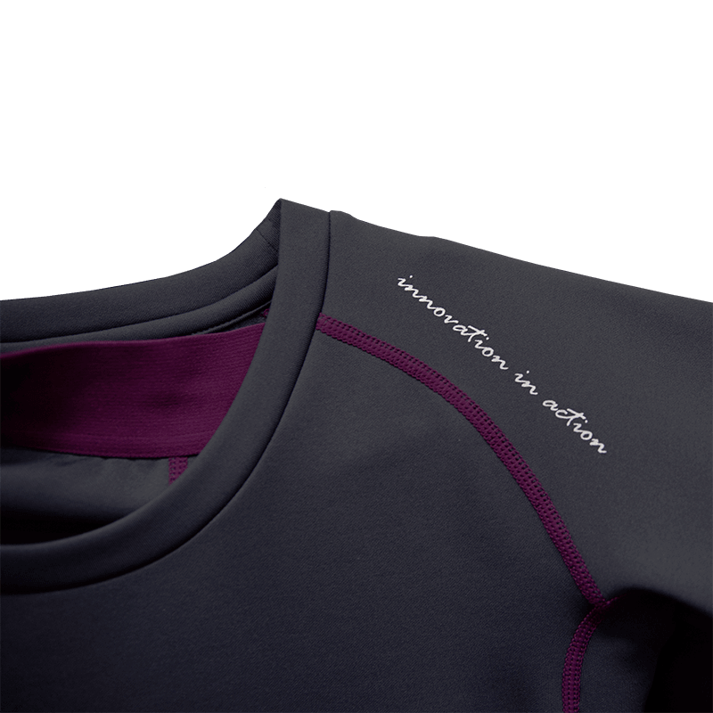

Vaikų terminiai apatiniai drabužiai - kokie šiluminiai apatiniai drabužiai yra geresni vaikui? - Vaikai - 2020
2020.10.27 02:57

Namai ir laisvalaikis Dieta ir mityba Sveikata Grožis Sodas Vaikai Mada Psichologija Ryšys Turizmas Karjera Sportas ir joga Vestuvės Pagrindinis Namai ir laisvalaikis Dieta ir mityba Sveikata Grožis Sodas Vaikai Vaikai
Terminis apatinis trikotažas vaikams - kaip pasirinkti ir kaip dėvėti terminį apatinį trikotažą vaikams?
Visi tėvai yra susipažinę su stebuklinga žiemos švente su Naujųjų Metų švenčių dienomis, kurie, be to, kelia grėsmę dėl šalčio dėl vaiko aušinimo ar perkaitimo. Peršalimas gali būti ūminių kvėpavimo takų virusinių infekcijų ir kitų peršalimo grandinės pradžia.
Taip pat žiūrėkite: Kaip apsirengti vaiką žiemą, kad jis negalėtų susirgti?
Vaikas negali pastebėti pernelyg didelio prakaitavimo ar šalto oro srautų, tačiau tai gali būti užkirstas kelias terminiai apatiniai drabužiai vaikams .
Vaikų sluoksniuotų drabužių privalumai ir ypatybės - už ką tai būtina?
garsėja padidėjusiu patvarumu pasižymi dideliu elastingumu ir nesitęsia turi vandeniui atsparų paviršių nepažeidžia odos kvėpavimo nepatiria jautrios odos, nekliudo judėti ir tankiai susilieja su oda taupo komfortą blogų oro sąlygų metu kiek įmanoma, šiltas nereikia lyginimo nekeičia spalvos ir neišnyks turi antibakterinį sluoksnį, kad pašalintų prakaito kvapą plokščios siūlės jokių vidinių etikečių
Kūdikių apatiniai - tipai, kaip pasirinkti terminį apatinį trikotažą vaikams?
Pažvelkite į stilius, spalvas ir medžiagas, todėl kyla naudingas klausimas - Kokie terminiai apatiniai drabužiai pasirinkti vaiką ?
Atsakingas tėvas neklausys pardavėjo patarimo, kuris kartais yra suinteresuotas greitai parduoti, o ne taupyti pinigus. Mes parengėme jums objektyvias taisykles ir patarimus. optimalus vaikų apatinio trikotažo pasirinkimas .
Terminiai apatiniai drabužiai vaikams yra pagaminti iš natūralūs ir sintetiniai audiniai.
Merino vilnos šiluminiai apatiniai drabužiai puikiai atstato drėgmės perteklių ir žiemą šalčiui įšyla. Toks terminis apatinis trikotažas tinka atpalaiduojantiems pasivaikščiojimams gryname ore. Norint aktyviai žiemos atostogas, susijusias su nuolatiniu prakaitavimu, geriau rinktis sintetiniai terminiai apatiniai drabužiai . Jis pašalins drėgmės perteklių iš kūno, o kūdikis nesijaučia „drėgnas ir prakaitas“.
Jei nesate tikri, kuris terminis apatinis trikotažas yra geresnis vaikui, pagalvokite už kokias sąlygas jis yra skirtas.
Jei esate gatvės sportui ar futbolui tada jums reikia nusipirkti sportą ir įprastą gatvėje. Mažiesiems Galite įsigyti hipoalerginį terminį apatinį vilnonį, kuris puikiai išlaiko šilumą šaltu oru.
Kaip dėvėti terminį apatinį trikotažą vaikams - pagrindines taisykles
Vaikams iki 2 metų nereikia sintetinio terminio apatinio trikotažo. nes jie šiek tiek prakaito. Jiems geriau rinktis vilną arba medvilninį apatinį trikotažą. Ypač šalto klimato sąlygomis yra dviejų sluoksnių modelis, kurio viduje yra medvilnė ir išorinė vilna. Vaikams po 2 metų galite pasirinkti dviejų sluoksnių terminį apatinį trikotažą kai vidinis sluoksnis yra natūralus ir išorinis sluoksnis yra sintetinis. Grynas vilnos terminis apatinis trikotažas nėra skirtas visiems , nes vilna gali netikti vaiko odai ir sukelti alerginį dermatitą. Jūs negalite dėvėti terminių apatinių drabužių ant kitų drabužių! Siekiant išsaugoti šilumines savybes, jis turi būti dėvimas ant plika kūno. Nepirkite terminio apatinio trikotažo augimui . Montavimo metu pasirinkite savo vaiko šiluminius apatinius dydžius. Tuo pačiu metu įsitikinkite, kad jis puikiai tinka, bet netrukdo judėti.
Jei girdėjote neigiamus atsiliepimus apie šiluminius apatinius, galite paklausti - ar tėvai žino kaip dėvėti terminį apatinį vaiką . Laikydamiesi visų išvardytų taisyklių jūsų vaikas jausis patogiai, nepriklausomai nuo oro sąlygų.
Šiltas apatinis trikotažas ypač tinka mobiliems vaikams didelis atsparumas dilimui, patogus dėvėjimas ir hipotermijos prevencija . Jums nebereikia būti nervingi ar įtikinti mane keisti drabužius - tiesiog dėvėkite patogų rinkinį ir Jūs galite būti ramus vaiko sveikatai.
Žiūrėti vaizdo įrašą: LINGERIE TRY ON HAUL. Sexy Adam and Eve Review (Spalio Mėn 2020).
Įdomios Straipsniai
Pupelės - sodinimas ir priežiūra atvirame lauke
October 27,2020
Kuskusas - sudėtis, naudojimas ir teisingas receptas
October 27,2020
Kaip pasirinkti korekcinius apatinius drabužius
October 27,2020
Rekomenduojama
Kaip išgydyti hemorojus namuose - liaudies gynimo priemones
Sveikata
Tempimo pratimai
Sveikata
Marinuoti baklažanai - geriausi receptai
Dieta ir mityba
Populiarios Temos, 2020
Labiausiai apgailėtinos dovanos - kaip atsikratyti jų?
Namai ir laisvalaikis
Vyšnios sirupu žiemai
Dieta ir mityba
Kaip pašalinti amžiaus dėmės ant veido
Grožis
Kaip pritraukti pinigus? 7 efektyvūs patarimai
Namai ir laisvalaikis
Kaip atsikratyti stipraus dūmų kvapo?
Namai ir laisvalaikis Copyright 2020 \ Moterų Laimė Ir Gerovė Žurnalas \ Terminis apatinis trikotažas vaikams - kaip pasirinkti ir kaip dėvėti terminį apatinį trikotažą vaikams?
Apatiniai termo drabužiai vyrams - Vulcan.lt MySport yra specializuota sporto prekių parduotuvė, kurioje yra viskas, kas būtina dviračių sportui, bėgimui ir lygumų slidinėjimui.
Vaikų terminiai apatiniai drabužiai - kokie šiluminiai ... Apatiniai terminiai marškiniai DUO-SKIN 100. Šioje svetainėje naudojami slapukai (angl. cookies). Sutinku Plačiau apie naudojimosi taisykles. 8 (686) 68781 Susisiekite su mumis Apie Mus Darbo laikas Pristatymas
Vyrų termodrabužiai nuo Pirmadienio, 10.12. Lidl - www.lidl.lt Terminiai rūbai Kaukės, apykaklės Vėsinantys priedai Apatiniai rūbai Apatinės pirštinės Kojinės Lietaus apsauga Priedai Valikliai Kepurėlės Marškinėliai Apsaugos Kaklo Nugaros Alkūnių, pečių, kelių apsaugos Kelnės Kelnės vyrams Kelnės moterims Juosmens diržai Džinsai Išpardavimas Šalmai
Terminiai apatiniai rūbai ALASKAN Master | Apatiniai rūbai ... Kokybiški šilti apatiniai drabužiai: kelnės, marškiniai, trumpikės ir kiti rūbai. Šilti apatiniai drabužiai kariams ir civiliams, teisėsaugos ir apsaugos darbuotojams, medžiotojams ir aktyvaus laisvalaikio mėgėjams. Platus modelių ir dydžių pasirinkimas.
Apatiniai terminiai marškiniai DUO-SKIN 100 Terminiai apatiniai drabužiai vaikams yra pagaminti iš natūralūs ir sintetiniai audiniai. Merino vilnos šiluminiai apatiniai drabužiai puikiai atstato drėgmės perteklių ir žiemą šalčiui įšyla. Toks terminis apatinis trikotažas tinka atpalaiduojantiems pasivaikščiojimams gryname ore.
Terminiai rūbai ALASKAN RoyalFish | Apatiniai rūbai ... Apatiniai termo drabužiai padės jums nesušalti net pačiomis šalčiausiomis žiemos dienomis. Vilkėkite termo rūbus po apačia kasdienių ar sporto rūbų ir jauskitės patogiai, šiltai bei užtikrintai!